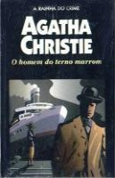

O Homem do Terno Marrom
The Man in the Brown Suit
Este livro é uma engenhosa mistura de romance policial e aventura. Trata de aventuras românticas e perigosas, vividas por sua protagonista, uma orfã atraente e corajosa chamada Anne Beddingfeld, que, quando menos espera, está no meio de uma enrascada, cheia de acontecimentos terríveis e misteriosos, que superam seus estranhos sonhos de levar uma vida semelhante à das mais destemidas heroínas de ficção. Escrita sempre na primeira pessoa, a narração divide-se habilidosamente entre o que Anne conta e o que no seu diário escreve Sir Eustace Pedler. O hilariante humor de Pedler, serve de contrapeso ao aceso romanticismo da jovem, que lutará contra uma quadrilha de criminosos cruéis dirigidos por um temível e enigmático personagem chamado “O Coronel”. Atrás das marcas deixadas por este enganoso coronel — fascinado, além disso, pela beleza e pelo caráter de Anne — também participa um coronel de verdade, Race, alto funcionário do Serviço Secreto, que intervém em outros romances de Agatha Christie como grande amigo de Hercule Poirot.
Gabriela Pires: A bela Anne Beddinfeld vive uma grande aventura a caminho da África, tentando descobrir a identidade do poderoso “coronel”. Enquanto isso, ela se apaixona e faz amizades no navio com Sir Eustace Pedler, o coronel Race e a Sra. Blair, embora saiba que qualquer um pode ser o Homem do Terno Marrom.